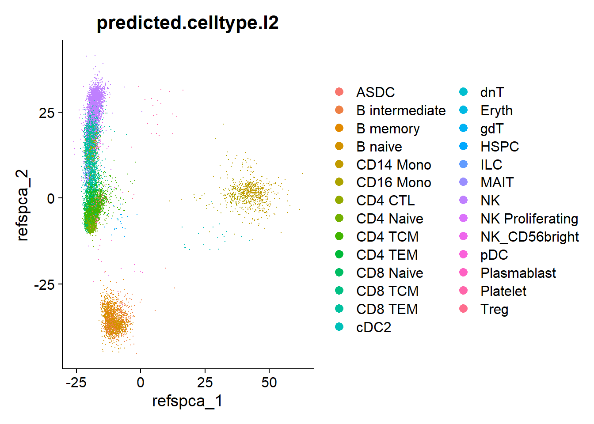
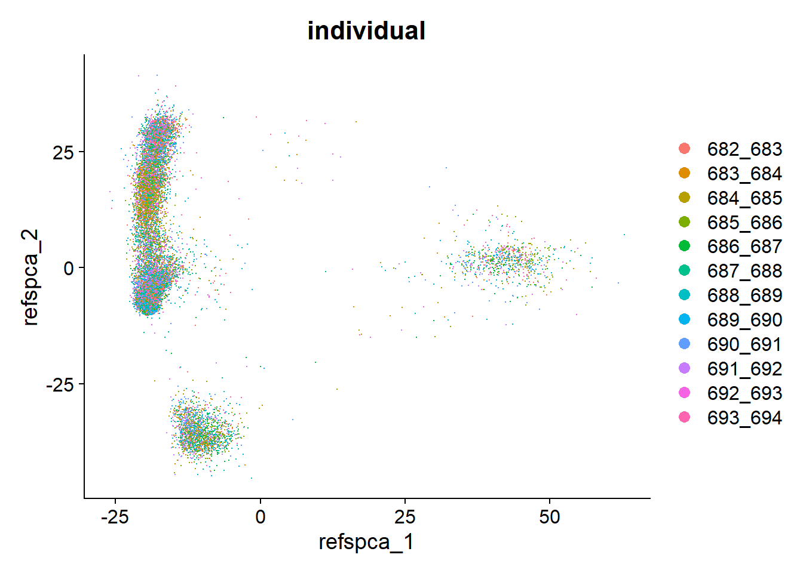
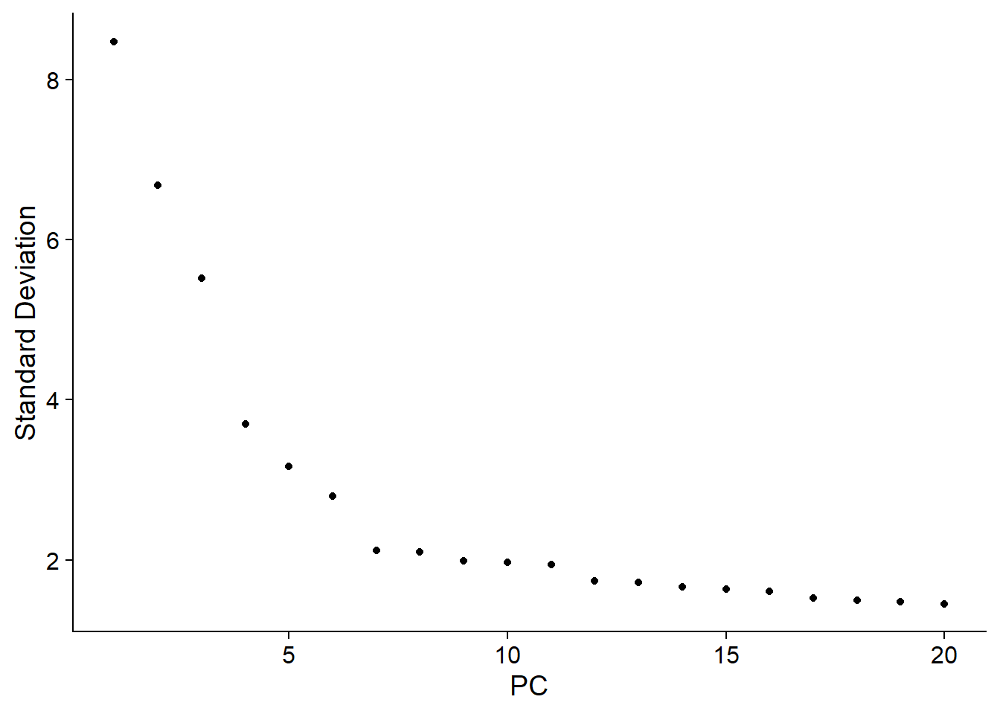
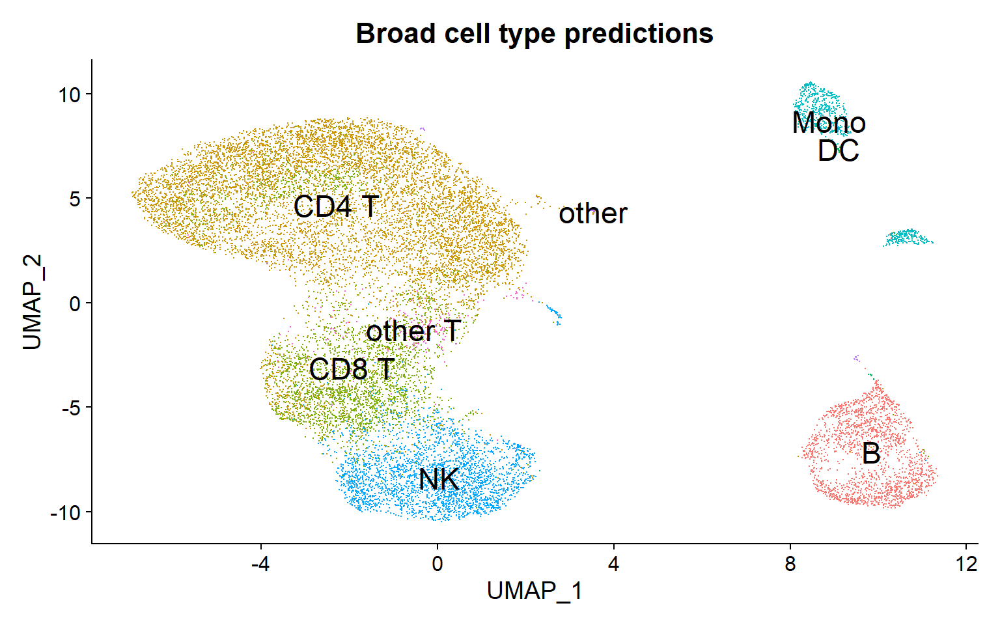
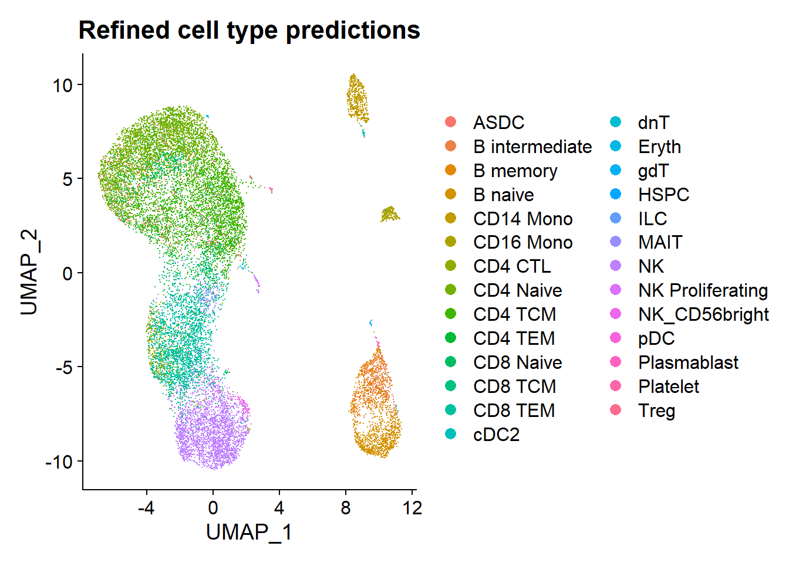
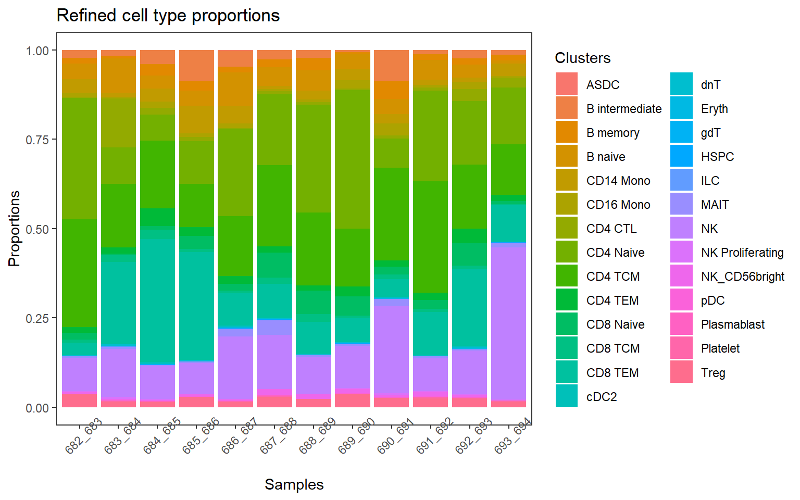
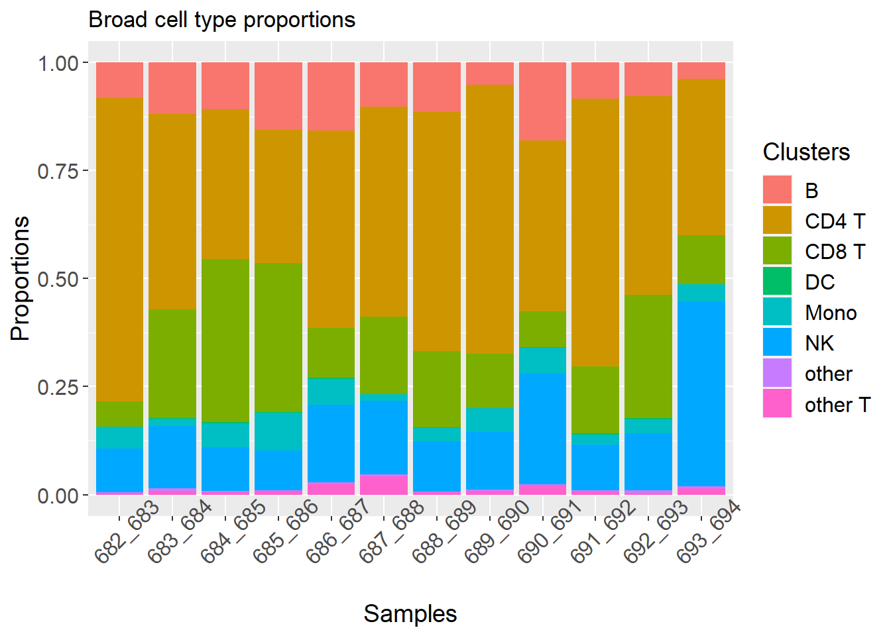
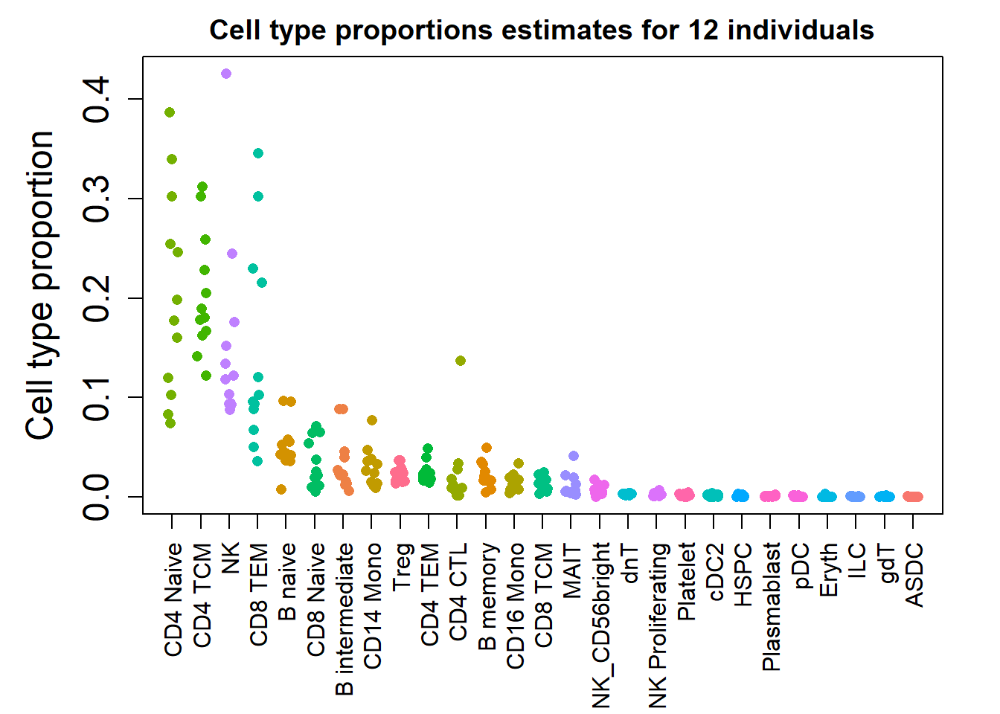
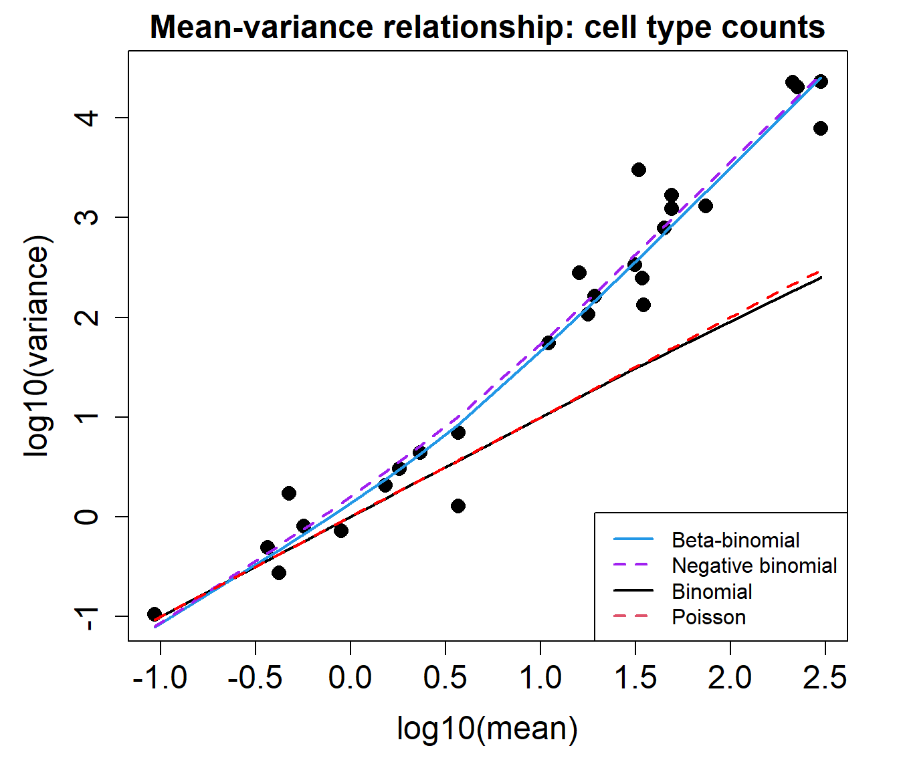
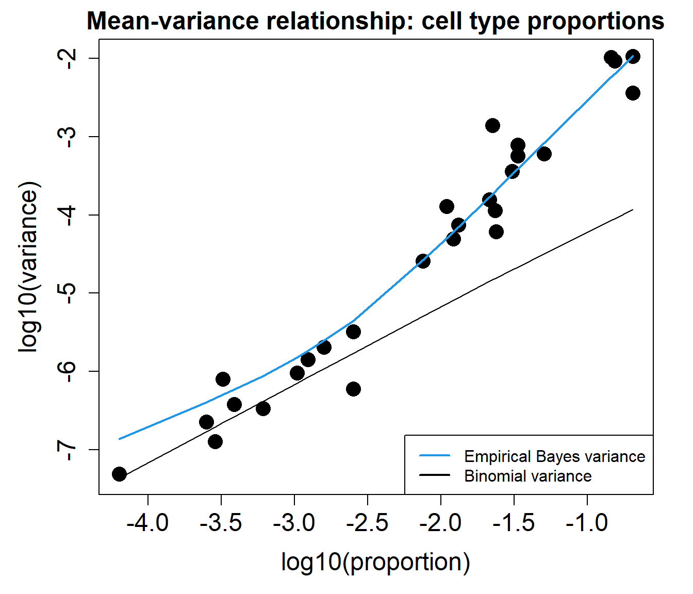

Last updated: 2022-06-01
Checks: 7 0
Knit directory: propeller-paper-analysis/
This reproducible R Markdown analysis was created with workflowr (version 1.7.0). The Checks tab describes the reproducibility checks that were applied when the results were created. The Past versions tab lists the development history.
Great! Since the R Markdown file has been committed to the Git repository, you know the exact version of the code that produced these results.
Great job! The global environment was empty. Objects defined in the global environment can affect the analysis in your R Markdown file in unknown ways. For reproduciblity it’s best to always run the code in an empty environment.
The command set.seed(20220531) was run prior to running
the code in the R Markdown file. Setting a seed ensures that any results
that rely on randomness, e.g. subsampling or permutations, are
reproducible.
Great job! Recording the operating system, R version, and package versions is critical for reproducibility.
Nice! There were no cached chunks for this analysis, so you can be confident that you successfully produced the results during this run.
Great job! Using relative paths to the files within your workflowr project makes it easier to run your code on other machines.
Great! You are using Git for version control. Tracking code development and connecting the code version to the results is critical for reproducibility.
The results in this page were generated with repository version ee88aa1. See the Past versions tab to see a history of the changes made to the R Markdown and HTML files.
Note that you need to be careful to ensure that all relevant files for
the analysis have been committed to Git prior to generating the results
(you can use wflow_publish or
wflow_git_commit). workflowr only checks the R Markdown
file, but you know if there are other scripts or data files that it
depends on. Below is the status of the Git repository when the results
were generated:
Ignored files:
Ignored: .Rproj.user/
Untracked files:
Untracked: data/CTpropsTransposed.txt
Untracked: data/CelltypeLevels.csv
Untracked: data/TypeIErrTables.Rdata
Untracked: data/appnote1cdata.rdata
Untracked: data/cold_warm_fresh_cellinfo.txt
Untracked: data/covid.cell.annotation.meta.txt
Untracked: data/heartFYA.Rds
Untracked: data/nullsimsVaryN_results.Rdata
Untracked: data/pool_1.rds
Untracked: data/sampleinfo.csv
Untracked: output/Fig1ab.pdf
Untracked: output/Fig1cde.pdf
Note that any generated files, e.g. HTML, png, CSS, etc., are not included in this status report because it is ok for generated content to have uncommitted changes.
These are the previous versions of the repository in which changes were
made to the R Markdown (analysis/pbmcJP.Rmd) and HTML
(docs/pbmcJP.html) files. If you’ve configured a remote Git
repository (see ?wflow_git_remote), click on the hyperlinks
in the table below to view the files as they were in that past version.
| File | Version | Author | Date | Message |
|---|---|---|---|---|
| Rmd | ee88aa1 | bphipson | 2022-06-01 | Add my first analysis |
library(Seurat)
library(speckle)
library(limma)
library(ggplot2)
library(edgeR)
library(patchwork)
library(cowplot)
library(gridGraphics)set.seed(10)The data is stored in a Seurat object. The cells have been classified into broader and more refined cell types.
pbmc <- readRDS("./data/pool_1.rds")# Cell type information
table(pbmc$predicted.celltype.l2)
ASDC B intermediate B memory B naive
1 570 361 871
CD14 Mono CD16 Mono CD4 CTL CD4 Naive
522 225 383 3552
CD4 TCM CD4 TEM CD8 Naive CD8 TCM
3451 389 597 205
CD8 TEM cDC2 dnT Eryth
2421 20 43 5
gdT HSPC ILC MAIT
4 18 5 189
NK NK Proliferating NK_CD56bright pDC
2582 43 134 7
Plasmablast Platelet Treg
10 27 414 DimPlot(pbmc, group.by = "predicted.celltype.l2")
table(pbmc$individual)
682_683 683_684 684_685 685_686 686_687 687_688 688_689 689_690 690_691 691_692
1185 1478 1042 1613 1309 1486 1582 1789 1462 1505
692_693 693_694
1310 1288 DimPlot(pbmc, group.by = "individual")
pbmc <- NormalizeData(pbmc)
pbmc <- FindVariableFeatures(pbmc, selection.method = "vst", nfeatures = 2000)
pbmc <- ScaleData(pbmc)
pbmc <- RunPCA(pbmc, features = VariableFeatures(object = pbmc))
ElbowPlot(pbmc)
pbmc <- RunUMAP(pbmc, dims = 1:11)DimPlot(pbmc, reduction = "umap",group.by = "predicted.celltype.l1", label=TRUE, label.size=6) + theme(legend.position = "none") + ggtitle("Broad cell type predictions")
DimPlot(pbmc, reduction = "umap",group.by = "predicted.celltype.l2") + ggtitle("Refined cell type predictions")
d1 <- DimPlot(pbmc, reduction = "umap",group.by = "predicted.celltype.l2") + theme(legend.position = "none") + ggtitle("a") + theme(plot.title = element_text(size = 18, hjust = 0))props <- getTransformedProps(clusters = pbmc$predicted.celltype.l2,
sample = pbmc$individual)
p1 <- plotCellTypeProps(clusters = pbmc$predicted.celltype.l2, sample = pbmc$individual) + theme(axis.text.x = element_text(angle = 45))+ ggtitle("Refined cell type proportions") +
theme(plot.title = element_text(size = 18, hjust = 0))
p1 + theme_bw() + theme(panel.grid.major = element_blank(),
panel.grid.minor = element_blank()) + theme(axis.text.x = element_text(angle = 45))
p2 <- plotCellTypeProps(clusters = pbmc$predicted.celltype.l1, sample = pbmc$individual)
p2 + theme(axis.text.x = element_text(angle = 45)) + ggtitle("Broad cell type proportions")
pdf(file="./output/Fig1ab.pdf", width =14, height=6)
d1 + p1
dev.off()png
2 counts <- table(pbmc$predicted.celltype.l2, pbmc$individual)
baselineN <- rowSums(counts)
N <- sum(baselineN)
baselineprops <- baselineN/Npbmc$final_ct <- factor(pbmc$predicted.celltype.l2, levels=names(sort(baselineprops, decreasing = TRUE)))counts <- table(pbmc$final_ct, pbmc$individual)
baselineN <- rowSums(counts)
N <- sum(baselineN)
baselineprops <- baselineN/Nprops <- getTransformedProps(clusters = pbmc$final_ct,
sample = pbmc$individual)cols <- ggplotColors(nrow(props$Proportions))
m <- match(rownames(props$Proportions),levels(factor(pbmc$predicted.celltype.l2)))par(mfrow=c(1,1))
par(mar=c(7,5,2,2))
plot(jitter(props$Proportions[,1]), col = cols[m], pch=16, ylim=c(0,max(props$Proportions)),
xaxt="n", xlab="", ylab="Cell type proportion", cex.lab=1.5, cex.axis=1.5)
for(i in 2:ncol(props$Proportions)){
points(jitter(1:nrow(props$Proportions)),props$Proportions[,i], col = cols[m],
pch=16)
}
axis(side=1, at=1:nrow(props$Proportions), las=2,
labels=rownames(props$Proportions))
title("Cell type proportions estimates for 12 individuals")
The mean-variance relationship plots below show that the data is overdispersed compared to what would be expected under a Binomial or Poisson distribution.
plotCellTypeMeanVar(counts)
plotCellTypePropsMeanVar(counts)
sessionInfo()R version 4.2.0 (2022-04-22 ucrt)
Platform: x86_64-w64-mingw32/x64 (64-bit)
Running under: Windows 10 x64 (build 22000)
Matrix products: default
locale:
[1] LC_COLLATE=English_United States.utf8
[2] LC_CTYPE=English_United States.utf8
[3] LC_MONETARY=English_United States.utf8
[4] LC_NUMERIC=C
[5] LC_TIME=English_United States.utf8
attached base packages:
[1] grid stats graphics grDevices utils datasets methods
[8] base
other attached packages:
[1] gridGraphics_0.5-1 cowplot_1.1.1 patchwork_1.1.1 edgeR_3.38.1
[5] ggplot2_3.3.6 limma_3.52.1 speckle_0.99.0 sp_1.4-7
[9] SeuratObject_4.1.0 Seurat_4.1.1 workflowr_1.7.0
loaded via a namespace (and not attached):
[1] utf8_1.2.2 reticulate_1.25
[3] tidyselect_1.1.2 RSQLite_2.2.14
[5] AnnotationDbi_1.58.0 htmlwidgets_1.5.4
[7] BiocParallel_1.30.2 Rtsne_0.16
[9] munsell_0.5.0 codetools_0.2-18
[11] ica_1.0-2 statmod_1.4.36
[13] future_1.26.1 miniUI_0.1.1.1
[15] withr_2.5.0 spatstat.random_2.2-0
[17] colorspace_2.0-3 progressr_0.10.0
[19] Biobase_2.56.0 highr_0.9
[21] knitr_1.39 rstudioapi_0.13
[23] stats4_4.2.0 SingleCellExperiment_1.18.0
[25] ROCR_1.0-11 tensor_1.5
[27] listenv_0.8.0 MatrixGenerics_1.8.0
[29] labeling_0.4.2 git2r_0.30.1
[31] GenomeInfoDbData_1.2.8 polyclip_1.10-0
[33] farver_2.1.0 bit64_4.0.5
[35] rprojroot_2.0.3 parallelly_1.31.1
[37] vctrs_0.4.1 generics_0.1.2
[39] xfun_0.31 R6_2.5.1
[41] GenomeInfoDb_1.32.2 locfit_1.5-9.5
[43] bitops_1.0-7 spatstat.utils_2.3-1
[45] cachem_1.0.6 DelayedArray_0.22.0
[47] assertthat_0.2.1 promises_1.2.0.1
[49] scales_1.2.0 rgeos_0.5-9
[51] gtable_0.3.0 beachmat_2.12.0
[53] org.Mm.eg.db_3.15.0 globals_0.15.0
[55] processx_3.5.3 goftest_1.2-3
[57] rlang_1.0.2 splines_4.2.0
[59] lazyeval_0.2.2 spatstat.geom_2.4-0
[61] yaml_2.3.5 reshape2_1.4.4
[63] abind_1.4-5 httpuv_1.6.5
[65] tools_4.2.0 ellipsis_0.3.2
[67] spatstat.core_2.4-4 jquerylib_0.1.4
[69] RColorBrewer_1.1-3 BiocGenerics_0.42.0
[71] ggridges_0.5.3 Rcpp_1.0.8.3
[73] plyr_1.8.7 sparseMatrixStats_1.8.0
[75] zlibbioc_1.42.0 purrr_0.3.4
[77] RCurl_1.98-1.6 ps_1.7.0
[79] rpart_4.1.16 deldir_1.0-6
[81] pbapply_1.5-0 S4Vectors_0.34.0
[83] zoo_1.8-10 SummarizedExperiment_1.26.1
[85] ggrepel_0.9.1 cluster_2.1.3
[87] fs_1.5.2 magrittr_2.0.3
[89] RSpectra_0.16-1 data.table_1.14.2
[91] scattermore_0.8 lmtest_0.9-40
[93] RANN_2.6.1 whisker_0.4
[95] fitdistrplus_1.1-8 matrixStats_0.62.0
[97] mime_0.12 evaluate_0.15
[99] xtable_1.8-4 IRanges_2.30.0
[101] gridExtra_2.3 compiler_4.2.0
[103] tibble_3.1.7 KernSmooth_2.23-20
[105] crayon_1.5.1 htmltools_0.5.2
[107] mgcv_1.8-40 later_1.3.0
[109] tidyr_1.2.0 lubridate_1.8.0
[111] DBI_1.1.2 MASS_7.3-57
[113] Matrix_1.4-1 cli_3.3.0
[115] parallel_4.2.0 igraph_1.3.1
[117] GenomicRanges_1.48.0 pkgconfig_2.0.3
[119] getPass_0.2-2 plotly_4.10.0
[121] scuttle_1.6.2 spatstat.sparse_2.1-1
[123] bslib_0.3.1 XVector_0.36.0
[125] stringr_1.4.0 callr_3.7.0
[127] digest_0.6.29 sctransform_0.3.3
[129] RcppAnnoy_0.0.19 spatstat.data_2.2-0
[131] Biostrings_2.64.0 rmarkdown_2.14
[133] leiden_0.4.2 uwot_0.1.11
[135] DelayedMatrixStats_1.18.0 shiny_1.7.1
[137] lifecycle_1.0.1 nlme_3.1-157
[139] jsonlite_1.8.0 viridisLite_0.4.0
[141] fansi_1.0.3 pillar_1.7.0
[143] lattice_0.20-45 KEGGREST_1.36.0
[145] fastmap_1.1.0 httr_1.4.3
[147] survival_3.3-1 glue_1.6.2
[149] png_0.1-7 bit_4.0.4
[151] stringi_1.7.6 sass_0.4.1
[153] blob_1.2.3 org.Hs.eg.db_3.15.0
[155] memoise_2.0.1 dplyr_1.0.9
[157] irlba_2.3.5 future.apply_1.9.0